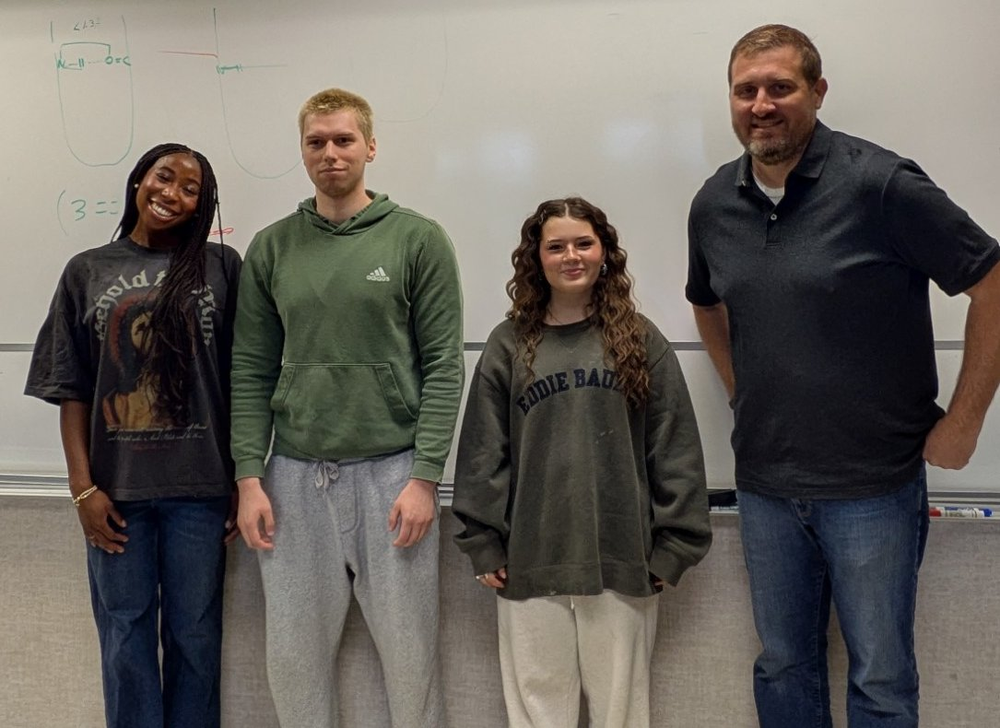

We use simulation to explain molecular behavior that experiments alone can't resolve.
The Layfield Lab combines quantum chemistry, molecular dynamics and enhanced sampling to study peptide folding, PFAS on biochar, degradable-polymer catalysts and spectroscopy. Undergraduates carry out the research and help build the open-source software it runs on.
- β-Hairpin turn control in tetrapeptidesActive
- Biochar-SimulatorActive
- PFAS adsorption on biocharActive
- Ring-opening polymerization catalystsActive
- Mössbauer-DFTActive
- Rashba splitting in CsPbBr₃Starting
Research areas
All research →Peptide folding & enhanced sampling
What controls whether short peptides fold into β-hairpins, and how far can machine-learned collective variables take enhanced sampling?
Biochar & PFAS
Building realistic molecular models of biochar and using them to understand how “forever chemicals” stick to its surfaces.
Catalysis & degradable polymers
Mapping the mechanisms of metal catalysts that open caprolactone and thionocaprolactone rings, a route to degradable plastics.
Spectroscopy from first principles
Predicting ⁵⁷Fe Mössbauer parameters with honest uncertainties, and spin-orbit effects on perovskite surfaces.
Interfaces & phase transfer
How ions cross the boundary between water and oil, and how phase-transfer catalysts change that process.
Open-source software
We publish the tools we build so others can reproduce and extend the work. Biochar-Simulator generates biochar structures ready for GROMACS; other packages set up PFAS simulations, analyze free-energy surfaces and draw reaction energy diagrams.
# Build a biochar model for molecular dynamics
pip install biochar
# or
conda install -c conda-forge biochar
The group
The lab is a small team of St. Thomas undergraduates working with Dr. Josh Layfield, Associate Professor of Chemistry. Many students stay in the lab for more than one year, and every student presents their own research.
Alumni have gone on to graduate programs in chemistry, to professional schools, and to careers in industry and data science.
Research with undergraduates
Every project in the lab is carried out by undergraduates. Students learn Python, quantum chemistry and molecular simulation through our training notebooks, run calculations on shared computing clusters, and present their results at St. Thomas and at regional and national meetings.
- Learn the tools. Work through Colab notebooks on Python, Gaussian output, trajectory analysis and enhanced sampling.
- Join a project. Reproduce a known result, then start your own calculations with weekly guidance.
- Share the work. Write it up like a journal article and present it at the UROP Inquiry poster session.